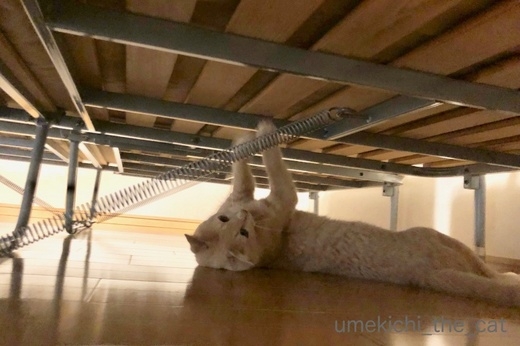
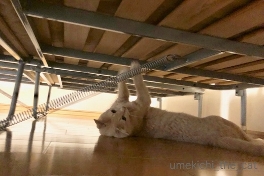

梅吉、夏越の祓えに行くの巻 [梅吉]
６月30日は夏越の祓え。

今年も近所の神社に立派な茅の輪がたちました。
茅の輪をくぐって半年間の厄落としをして残り半年の無病息災を祈念しますよ＾＾

もちろん梅吉さんも一緒です。
キャリーに入って緊張気味。
（4秒です＾＾音量注意！でも音出して見てくださいねw）
病院に行く時でもこんなに絶叫しないのですが・・・(^▽^;)
この日はマンションの配管掃除のため家の外に出ると大きなモーター音がしていたので
それがイヤだったと思われます。

さ、茅の輪をくぐりますよー！
一応くぐり方を書いておきますね。
まず茅の輪の前、中央に立って一礼。
向かって左側の方向へ左足から茅の輪をくぐって左回りで元の中央位置へ。
一礼して今度は向かって右側の方向へ右足からくぐって右回りで元の位置へ。
（ミツバチの八の字ダンスみたいな感じです＾＾）
再度一礼して同じ様に左の方向へ左足からくぐって元の位置に。
最後に一礼して左足から茅の輪をくぐり神殿まで向かってお詣りをします。
茅の輪をくぐっている間は
「水無月の夏越の祓する人は、千歳の命延（の）ぶというなり」
と唱えます。
茅の輪くぐりに行けなかった方、写真の茅の輪で厄落としをされてはいかがでしょうか(^_－)☆

では、私も梅吉さんと一緒にくぐります。
おっとが写真にエフェクトをかけたら茅の輪が神々しく輝いておりますよー。
神々しい茅の輪をくぐり梅吉は新たなフェーズへと突入するのでしょうか！？
今後の半年にご期待ください( ´艸｀)
帰り道、私の呼びかけに答える梅吉さんw
（３秒です＾＾またまた音量注意！！）
ちょっとヤケクソ気味のお返事でしたwww
 ↑ガブッと一押し↑
↑ガブッと一押し↑
時々明け方にベッドの下からびよよよよよ〜んとバネを弾く音が。
梅吉がいたずらしているのはわかっていたのですが瞬間を激写しました！

なかなかうまく弾いているw
早朝寝室に響く「びよよよよよ〜ん」はなんとも間が抜けた音で
ふふっと笑いながら目が覚めます(≧▽≦)
＊今夜はとっとと寝て明日朝３時に起きる予定www＊

今年も近所の神社に立派な茅の輪がたちました。
茅の輪をくぐって半年間の厄落としをして残り半年の無病息災を祈念しますよ＾＾

もちろん梅吉さんも一緒です。
キャリーに入って緊張気味。
（4秒です＾＾音量注意！でも音出して見てくださいねw）
病院に行く時でもこんなに絶叫しないのですが・・・(^▽^;)
この日はマンションの配管掃除のため家の外に出ると大きなモーター音がしていたので
それがイヤだったと思われます。

さ、茅の輪をくぐりますよー！
一応くぐり方を書いておきますね。
まず茅の輪の前、中央に立って一礼。
向かって左側の方向へ左足から茅の輪をくぐって左回りで元の中央位置へ。
一礼して今度は向かって右側の方向へ右足からくぐって右回りで元の位置へ。
（ミツバチの八の字ダンスみたいな感じです＾＾）
再度一礼して同じ様に左の方向へ左足からくぐって元の位置に。
最後に一礼して左足から茅の輪をくぐり神殿まで向かってお詣りをします。
茅の輪をくぐっている間は
「水無月の夏越の祓する人は、千歳の命延（の）ぶというなり」
と唱えます。
茅の輪くぐりに行けなかった方、写真の茅の輪で厄落としをされてはいかがでしょうか(^_－)☆

では、私も梅吉さんと一緒にくぐります。
おっとが写真にエフェクトをかけたら茅の輪が神々しく輝いておりますよー。
神々しい茅の輪をくぐり梅吉は新たなフェーズへと突入するのでしょうか！？
今後の半年にご期待ください( ´艸｀)
帰り道、私の呼びかけに答える梅吉さんw
（３秒です＾＾またまた音量注意！！）
ちょっとヤケクソ気味のお返事でしたwww
時々明け方にベッドの下からびよよよよよ〜んとバネを弾く音が。
梅吉がいたずらしているのはわかっていたのですが瞬間を激写しました！

なかなかうまく弾いているw
早朝寝室に響く「びよよよよよ〜ん」はなんとも間が抜けた音で
ふふっと笑いながら目が覚めます(≧▽≦)
＊今夜はとっとと寝て明日朝３時に起きる予定www＊

カフェオレ色の梅吉

梅吉 2023年8月10日 永眠


梅吉と出会った譲渡会

犬猫の理由なき殺処分ゼロ
妄想広告
UMEKICHI 光

爆発的に早い！
時々攻撃的！
Thanks to Mr.Boss365
爆発的に早い！
時々攻撃的！
Thanks to Mr.Boss365

茅の輪をくぐった際には、梅吉様も一緒に唱えてそう(^^)
梅吉様、弦楽器もアクロバティックに演奏しちゃうよ(^^)
by middrinn (2018-07-02 08:49)
夏越の祓えですね^^
わたしももちろんくぐって参りました。でも
そんなふうに唱えるのは知らなかった！
覚えてまた行ってこなくてはっ
梅吉君もこれで元気に過ごせるね♪
by リュカ (2018-07-02 11:02)
3時？もしかしてワールドカップですか^^
by ニコニコファイト (2018-07-02 11:33)
半年分のケガレを落とす行事なのですね。知らなかった (^.^)
昔の人は、病気や天災など、死と隣り合わせの生活を送っていたから、
感謝の気持ち、生活の節目として大事にしてたのでしょうね。
梅吉さん、どうでしたか？
「茅の輪で爪トギしたいわぁー」なんて思ったかな(笑)
さてさて、3時ですよね。
ダンナは早くも、アキラメタ……と腑抜けたことを言っております。
私は3時にオキルッ！と息巻いてますが、はたしてデキルノカ？
歴史的瞬間、リアルで見たいのよーーーー！！
がんばれ、アタシ。。。
by morichan (2018-07-02 11:48)
梅吉さんの声が可愛くて何度も聞いちゃいました。びよよ~~んも動画で見たいけど無理ね。
by zombiekong (2018-07-02 12:11)
こんにちは。
茅の輪・・・良い風習ですね！！小さな茅の輪を腰に付けてください！！
御利益あります！！多分！！（⌒ー⌒）
梅吉君！！4秒間の鳴き声も可愛いですね！！リズム感ありますね！！
梅吉君のバネ？弦楽器の音で目覚める・・・優雅な生活です！？(=^･ｪ･^=)
by Boss365 (2018-07-02 12:14)
梅吉さんの絶叫で疫病も穢れも何もかも吹っ飛びそうです(≧▽≦)
ウチのはお散歩は無理だな～^^;
キャリーケースも自転車の荷台に積む前提でハードケースを買ってしまったので持ち歩けず・・・リュックタイプが欲しいなと思ってます^^
梅吉さんの名演奏が目覚まし時計替わりとは何とも優雅な朝♪
最初はびっくりしたでしょうね！
by ゆきち (2018-07-02 12:47)
茅の輪くぐりで梅吉さんも無病息災ですねぇ(^O^)
うちは大御所だけなら連れて行けるかもしれませんが
帰って来たら３にゃんとの家庭内戦争が勃発しそう^^;
写真で厄落としさせていただきます<(_ _)>
「びよよ～ん」の音で起こされると一日ＨＡＰＰＹでいられそう(^_^)v
by ニッキー (2018-07-02 14:15)
ちょっと不安そうな梅吉さんの声ですね。
茅の輪をくぐって、もう半年幸せに過ごせそうですね！
勝手なお願いですが、今度はバネ動画もチャレンジしてください(^^;)
by kou (2018-07-02 17:58)
梅吉さんも一緒にお出かけなのですね！
厄が払えて良かったですね(^ ^)
by ma2ma2 (2018-07-02 19:12)
middrinnさん＞
茅の輪をくぐった時は絶叫は止んでいたので
間違いなく唱えていたと思われますw
梅吉にはウッドベースが似合うかなぁ・・・
リュカさん＞
神社によって唱えことばは違う様ですよー。
近所の神社は短冊に書かれたものがたくさん下がっていて
一枚ずつもらえる様になっていました＾＾
この先半年も元気に、ついでに地震もありませんようにって
（半年に限ったことじゃ無いけど）
お願いしてきました！！
ニコニコファイトさん＞
そうですよー＾＾VSベルギー戦です。
気合は入ってますが本当に起きられるのかは不明www
morichanさん＞
私も大阪に住むまでこんな風習があるの全然知りませんでした！
日本の文化はなんて奥深いんだろう・・・ディスカバー・ジャパン！！
って感じで単純な私はいたく感激いたしました (｡-_-｡)
梅吉は絶叫したあとは興味深げに周りの景色をキョロキョロ。
茅の輪はさぞかし魅力的な爪研ぎに写っていたことでしょうw
ついでに「のぼってみたいわぁ」と思っていたかも( ´艸｀)
さて、決勝TのVSベルギー戦は選手の皆さんに頑張ってもらう前に
まず見る方が頑張らなければいけないという
何ともハードルの高い試合ですw
とりあえず３時のテレビ前で「morichanさん観てるー？」と
念を送ってみますね(^_－)☆
zombiekongさん＞
すっごい絶叫ですが何度も見ていただいたのですね！！
ちなみに普段の鳴き声はキャラに似合わずもっと可愛いです( ´艸｀)
びよよ〜んはホント皆さんに見て、聞いていただきたいです。
脱力すること間違いなし、ですからー(≧▽≦)
Boss365さん＞
小さな茅の輪、蘇民将来ですね＾＾
梅吉が喜んで飛びついてきて罰当たりなことになりそうなので
大きな茅の輪で良しとしておきますw
普段の梅吉はキャラに似合わずもっと可愛い声なんですよ。
今度そちらの動画もアップせねば！
梅吉の奏でるバネは優雅さと圧倒的な脱力感でいっぱいですよ(*>艸<)
ゆきちさん＞
たしかに〜www厄を払うのにぴったりな絶叫ですね(*>艸<)
悪しきものも裸足で逃げ出しそうです。
肩掛けタイプのキャリーは肩が脱臼しそうになるので
リュックタイプも良いですねー。
でもうちは更に（自分たちが）年取ったことを考えて
カート式も良いかな・・・と考えております(^▽^;)
梅吉の名演奏は優雅で脱力した朝を届けてくれますよー。
初めてびよよ〜んと聞いた時、私は飛び起きましたが
おっとは寝続けてましたwww
ニッキーさん＞
大御所様の一家を代表して、の厄払いは
許していただけないのですねw
では、僭越ながら写真の茅の輪を有効に
ご活用してくださいませm(_ _)m
「びよよ〜ん」は笑って朝を迎える事も出来、
なおかつ脱力感たっぷりの音色に肩の力を抜いた
リラックスした１日を始める事も出来る優れものです＾＾
kouさん＞
今後半年の無病息災と地震が起きませんように
（半年に限りませんが）
と祈念してきましたよ＾＾
バネ動画、がんばってみますねー( ´艸｀)
ma2ma2さん＞
あるいて50歩ぐらいの距離なので
一緒に出かけてきました＾＾
厄落としで一皮向けた梅吉になってきましたよ！
by ちぃ (2018-07-02 19:38)
茅の輪、神々しいですね！とっても良いことが起こりそう。
梅吉さん、音楽の素養がおありかしら？
びよよ〜んで、起きたら、1日が楽しそうです。
by nachic (2018-07-02 20:02)
茅の輪、初詣でしかみたことがありませんでした。
くぐり方のお作法は毎度忘れてgoogle先生に
聞いてしまいます^^;
梅ちゃんお出かけお疲れさまでしたー^^
by ryang (2018-07-02 20:39)
茅の輪をくぐり方と一緒に、くぐりました。
便乗させて頂きまして、ありがたや（笑）
梅吉さんの鳴き声、良いですね〜
ちぃさんの声も可愛い。
ニャンさんを呼ぶ声って、みなさん可愛いのね〜
by kiki (2018-07-02 20:42)
夏越の祓？ 知りませんでした。
というか、去年ブログで見るまで知らなかったです。
風流ですねえ。
梅吉さんもくぐったんだ！
にゃんこを連れて行くほど、根付いている行事なのですね。
愛を感じます＾＾
写真と梅吉さんの声で、お祓いのおすそ分けいただきました＾＾
by sana (2018-07-02 21:24)
梅吉さん、お疲れ様でした。
ウチの猫は外に出すことが無いので
お写真でありがたく厄落としさせていただきますー。^^)
by yes_hama (2018-07-02 22:06)
茅の輪っていうんですね、一回だけくぐったことあります。
（黙っていましたが・・・）
梅さま、一緒にくぐったのですね！
「いやだよぅ！いやだよぅ！」に聞こえなくもないですが^^;
無病息災で健やかに過ごせると良いですね！
by Ja-Kou66 (2018-07-03 00:07)
うちの子全員連れて行くのは大変ですから
代表して次男君に行ってもらおうかな。
まずは、茅の輪のある神社を探さなきゃ＾＾；
by ぽちの輔 (2018-07-03 06:17)
電車の中なんで、ちゃんとイヤホンをセットしてから
動画見ましたー！
絶叫が笑えるーーーっ(≧∀≦)
by よーちゃん (2018-07-03 08:35)
夏越の祓♪
茅の輪をくぐり！
梅吉さんも一緒に！これで無病息災！
また一年元気に過ごせますね(#^.^#)
キャリーバックの揺れとともに
可愛い声が♪
by きぃ (2018-07-03 09:29)
ベルギー戦。凄まじかったですね。
惜しかったぁ。。。本当に、惜しかった！！
やっぱり悔しさは残るけれど……、でも誇らしい戦いでした！！！
ちぃさんの「観てるー？」コール、ありがとー。
おかげで、ばっちり起きられましたよ～～(^^)
梅吉さんも応援してたのかな？
by morichan (2018-07-03 10:37)
茅の輪くぐり。私も写真の茅の輪を教え通りにくぐってみました。
家族全員の厄払いしちゃった！ありがとう(*^-^*)
梅吉くん、茅の輪くぐりは初めてじゃないでしょ。
タラが病院へ行くときの鳴き声にそっくりだから
「にゃに。にゃに」って、くるみが反応してるよ～。
びよよよよよ〜ん。めちゃくちゃおかしい！
でもつま弾きたく気持ちはわかる気がするな(≧▽≦)
by emi (2018-07-03 16:20)
梅吉さん、無病息災ですね♪＾＾
元気なお返事？( ´艸｀)可愛い～♡＾＾
by マーヤ (2018-07-04 00:12)
梅吉さん、お疲れ〜
茅の輪くぐりって、初めて知りました。
無知でごめーんね。
by じゅらまろ (2018-07-04 12:54)
nachicさん＞
神々しい茅の輪をくぐって身も心もすっきりしました＾＾
何か良いことがあるといいな♪
びよよ〜んは思い出しても笑っちゃう楽しい音色ですよ。
梅吉どこで習ってきたんだろう・・・
ryangさん＞
茅の輪は年末から年始にかけて立つところもありますね＾＾
私もお作法は毎年茅の輪の横に書いてある案内書を
見てからじゃないとくぐれません(^▽^;)
今年はブログ記事にしたので
来年まで脳が覚えていてくれることを期待してますwww
kikiさん＞
茅の輪の写真お役に立ちましたか？
記事にして良かったです＾＾
みなさん最愛のニャンコを呼ぶときは
可愛い声になってしまうのでしょうか ( ´艸｀)
私も普段よりワントーン高い？優しい声？？
少なくともおっとを呼ぶときよりはそうかもーwww
sanaさん＞
季節の風物詩、みなさんにも楽しんでいただければ、と＾＾
近くの神社は遠方からたくさん人が来る所ではないので
私たちが行ったときは他に一組み家族連れがいたのみ。
あんまりたくさんの人に会ったことがないので
ペットを連れて茅の輪をくぐっている人
まだ見たことないんですがきっといるはず！！ヾ(*ΦωΦ)ﾉ
梅吉の絶叫は悪しきものも逃げ出しそうですよねw
yes_hamaさん＞
はい＾＾梅吉、がんばってきましたよー！
茅の輪の写真有効活用してくださいませ(^_－)☆
Ja-Kou66さん＞
茅の輪の時期は神社も混み合わないので
梅吉も連れて行きました＾＾
本当は初詣も連れて行きたいのですが
寒いのと人が大勢いるので断念w
「いやだよぅ！」と言いながら茅の輪をくぐっているときは
神妙にしておりましたよー( ´艸｀)
ぽちの輔さん＞
梅吉だけでも連れて歩くのは大変だ、と思うのに
皆にゃん揃っては・・・ちょっと無理がありますね！
次男君に頑張ってもらいましょう＾＾
茅の輪の神社、あると良いですね。
よーちゃん＞
イヤホンがあれば完璧ですね＾＾
より臨場感のある梅吉動画がお楽しみいただけたのではないでしょうか(^_－)☆
きぃさん＞
そうそう！この絶叫はキャリーの揺れとともに
ビブラートがかかっておりますw
神社まで誰ともすれ違いませんでしたが
結構苦笑いの絶叫でしたwww
morichanさん＞
ベルギー戦の余韻まだ、冷めやらずw
軽くサッカーロスでしょうか・・・
今後はベルギーチームを応援しようかしら。
リアルタイムで試合は見ないけどー( ´艸｀)
emiさん＞
全員厄落としできた？それは良かったよー！！
写真を載せた甲斐がありましたＯ(≧▽≦)Ｏ
お互い清々しい気分で今後半年を過ごせますね＾＾
くるみちゃん、心配してくれたのかな？
知らない声だけど一大事にゃ！？って優しいなぁ・・・
梅吉は自分の動画・音声以外は完全無視なのw
自分は猫だって思ってないのかもwww
びよよよよよ〜ん、はホント聞いてもらいたいです。
良い具合に肩の力が抜けて脱力できます( ´艸｀)
マーヤさん＞
今後半年、いえ命ある限り無病息災で！
あかりちゃんがほうきに乗って茅の輪くぐりにきてましたよ＾＾
じゅらまろさん＞
私も大阪に来るまでこんな風習知らなんだ・・・
写真でくぐってみてー(^_－)☆
by ちぃ (2018-07-04 16:18)
めっちゃ唸ってる～!!
帰りの返事する梅吉くん可愛い声です！きゅ～～～～ん(*´▽｀*)
by palpal (2018-07-04 17:07)
palpalさん＞
めっちゃ大きい声で鳴くからちょっと恥ずかしかったでーす。
（誰もいなかったから良かったけど(^▽^;) ）
良いお返事でしょー＾＾
普段は呼んでもガン無視するのにwww
by ちぃ (2018-07-04 22:14)
スゴーーーーーい！！！
梅吉ちゃんと一緒にお参り。素晴らしいです。
考えたこともなかったです。
私もちぃさんのブログで妄想厄除けをネコ全員と致します。
どんだけ大声だと思って動画スタート、ドッキドキで押しました(笑)
めちゃくちゃ可愛い梅吉ちゃん。声！！！！！
可愛すぎですよぉ。
↑
普段は・・・・ガン無視(爆)って、ちゃんと本番ではお返事＾＾
おりこうさん、梅吉ちゃん♡(*'▽')
by ake_i (2018-07-04 22:25)
ake_iさん＞
うちから神社まで50歩くらいなんです(我が家は参道に建ってます）＾＾
梅吉はキャリーで外に出ることは嫌がらないので
年に一・二度は一緒にお参りしてるんですよー(≧▽≦)
この日は珍しく絶叫していたので思わず動画に撮っちゃいましたw
おっきな声でしょー(^▽^;)
茅の輪の写真、どうぞ有効活用してくださいませー。
家の中では（ご飯をもらう時以外は）お返事なんてしてくれません・・・
姿が見当たらなくて焦って呼びながら探せば探すほど
物陰から無言でじーっと見ててwww
ブログ向けサービスも良いけど探している時にも返事してよー(꒦ິ⌑꒦ີ)
by ちぃ (2018-07-05 08:48)